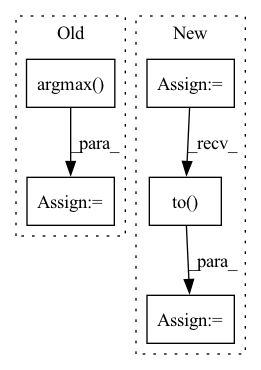

Pattern ID :16051
Before Change
if opt.aug_type is not None:
logit_aug_t = model_t(input_aug)
logit_aug_s = model_s(input_aug)
pred_lbl_t = logit_aug_t.argmax( 1)
// cls + kl div
loss_cls_nat = criterion_cls(logit_s, target)
After Change
input_aug = opt.aug_lambda * input_aug + (1 - opt.aug_lambda) * input_aug_b
elif opt.aug_lambda == -1:
// compute mixup samples using the beta distribution
lambda_aug = np.random.beta(opt.aug_alpha, opt.aug_alpha, size=[bs, 1, 1, 1])
lambda_aug = torch.from_numpy(lambda_aug).type(torch.FloatTensor).to( opt.device)
input_aug = lambda_aug * input_aug + (1 - lambda_aug) * input_aug_b
In pattern: SUPERPATTERN
Frequency: 3
Non-data size: 5
Instances Fragment ID: 53844853
Project Name: alldbi/supermix
Commit Name: fddc8b4e6fb166c7f5e5bcaf15fdab12549e363f
Time: 2020-01-21
Author: ali.dabouei@gmail.com
File Name: helper/loops.py
M Class Name: AnonimousClass
N Class Name: AnonimousClass
M Method Name: train_distill(11)
N Method Name: train_distill(11)
M Parent Class:
N Parent Class:
M File Name: helper/loops.py
N File Name: helper/loops.py
M Start Line: 144
M End Line: 188
N Start Line: 141
N End Line: 196
Before Change
pred_rgb = pred_rgb.argmax(dim=2).squeeze() // [T, h, w]
pred_then_colorized_vis = colorize_semseg(postprocess_mask(pred_rgb), num_classes=SYNPICK_CLASSES) // [T, 3, h, w]
frames_seg = [seg_model(frames[:, i]).argmax(dim=1) for i in range(frames.shape[1])]
frames_seg = torch.stack(frames_seg, dim=1) // [1, 1, h, w]
input_seg = frames_seg[:, :VIDEO_IN_LENGTH] // [1, t, 1, h, w]
pred_mask = pred_mask_model.pred_n(input_seg, pred_length=VIDEO_PRED_LENGTH)
pred_mask = pred_mask.argmax(dim=2) // [1, T, 1, h, w]
pred_mask = postprocess_mask(torch.cat([input_seg, pred_mask], dim=1).squeeze()) // [T, h, w]
pred_mask_vis = colorize_semseg(pred_mask, num_classes=SYNPICK_CLASSES) // [T, 3, h, w]
frames_colorized = colorize_semseg(postprocess_mask(frames_seg.squeeze()), num_classes=SYNPICK_CLASSES).unsqueeze(dim=0) // [1, T, 3, h, w]
frames_colorized_vis = postprocess_img(frames_colorized.squeeze(dim=0)) // [T, 3, h, w]
input_colorized = frames_colorized[:VIDEO_IN_LENGTH]
colorized_then_pred = pred_colorized_mask_model.pred_n(input_colorized, pred_length=VIDEO_PRED_LENGTH)After Change
test_data = SynpickVideoDataset(data_dir=data_dir, vid_type=("rgb", 3), num_frames=VIDEO_TOT_LENGTH,
step=4, allow_overlap=VID_DATA_ALLOW_OVERLAP)
test_loader = DataLoader(test_data, batch_size=1, shuffle=True, num_workers=4)
iter_loader = iter(test_loader)
with torch.no_grad():
for i in tqdm(range(10)):
frames = next(iter_loader).to( DEVICE) // [1, T, 3, h, w]
frames_vis = postprocess_img(frames.squeeze(dim=0)) // [T, 3, h, w]
input = frames[:, :VIDEO_IN_LENGTH] // [1, t, 3, h, w]
pred_rgb = pred_rgb_model.pred_n(input, pred_length=VIDEO_PRED_LENGTH)
pred_rgb = torch.cat([input, pred_rgb], dim=1) // [1, T, 3, h, w]
pred_rgb_vis = postprocess_img(pred_rgb.squeeze(dim=0)) // [T, 3, h, w]
pred_rgb = torch.stack([seg_model(pred_rgb[:, i]) for i in range(pred_rgb.shape[1])], dim=1)
pred_rgb = pred_rgb.argmax(dim=2).squeeze() // [T, h, w]
pred_then_colorized_vis = colorize_semseg(postprocess_mask(pred_rgb), num_classes=SYNPICK_CLASSES).transpose(0, 3, 1, 2) // [T, 3, h, w]
frames_seg = torch.stack([seg_model(frames[:, i]) for i in range(frames.shape[1])], dim=1).argmax(dim=2) // [1, T, 1, h, w]
frames_seg_in = torch.stack([(frames_seg == i) for i in range(SYNPICK_CLASSES)], dim=2).float() // [1, T, c, h, w] one-hot float
input_seg = frames_seg_in[:, :VIDEO_IN_LENGTH] // [1, t, c, h, w]
pred_mask = pred_mask_model.pred_n(input_seg, pred_length=VIDEO_PRED_LENGTH).argmax(dim=2) // [1, n, 1, h, w]
pred_mask = torch.cat([input_seg.argmax(dim=2), pred_mask], dim=1).squeeze() // [T, h, w]
pred_mask_vis = colorize_semseg(postprocess_mask(pred_mask), num_classes=SYNPICK_CLASSES).transpose(0, 3, 1, 2) // [T, 3, h, w]
frames_colorized = colorize_semseg(postprocess_mask(frames_seg.squeeze()), num_classes=SYNPICK_CLASSES)
frames_colorized_vis = frames_colorized.transpose(0, 3, 1, 2) // [T, 3, h, w]
input_colorized = preprocess_img(frames_colorized[:VIDEO_IN_LENGTH]).to(DEVICE).unsqueeze(dim=0) // [b, t, 3, h, w]
colorized_then_pred = pred_colorized_mask_model.pred_n(input_colorized, pred_length=VIDEO_PRED_LENGTH) Fragment ID: 53844820
Project Name: ais-bonn/vp-suite
Commit Name: 13016d4ab8ba4f8e7ee087155a6c5171f4d00ba3
Time: 2021-08-02
Author: boltres@ais.uni-bonn.de
File Name: scripts/visualize_4_way.py
M Class Name: AnonimousClass
N Class Name: AnonimousClass
M Method Name: visualize_4_way(1)
N Method Name: visualize_4_way(1)
M Parent Class:
N Parent Class:
M File Name: scripts/visualize_4_way.py
N File Name: scripts/visualize_4_way.py
M Start Line: 16
M End Line: 73
N Start Line: 17
N End Line: 74
Before Change
token_tensor = token_tensor.unsqueeze(-1)
predictions = self.model(token_tensor)
// convert results to tags
top_predictions = predictions.argmax( -1)
predicted_tags = [self.data.tag_field.vocab.itos[t.item()] for t in top_predictions]
// print inferred tags
max_len_token = max([len(token) for token in tokens] + [len("word")])
max_len_tag = max([len(tag) for tag in predicted_tags] + [len("pred")])After Change
// begin prediction
token_tensor = torch.as_tensor(numericalized_tokens)
token_tensor = token_tensor.unsqueeze(-1).to(self.device)
char_tensor = torch.as_tensor(numericalized_chars)
char_tensor = char_tensor.unsqueeze(0).to( self.device)
predictions, _ = self.model(token_tensor, char_tensor)
// convert results to tags
predicted_tags = [self.data.tag_field.vocab.itos[t] for t in predictions[0]]
// print inferred tags Fragment ID: 53844881
Project Name: yoseflaw/nerindo
Commit Name: a70e55e7c0489cba1290ebd51512a9e878c6e0ed
Time: 2020-08-09
Author: yosefardhitowin@gmail.com
File Name: nerindo/trainer.py
M Class Name: Trainer
N Class Name: Trainer
M Method Name: infer(3)
N Method Name: infer(3)
M Parent Class: object
N Parent Class: object
M File Name: nerindo/trainer.py
N File Name: nerindo/trainer.py
M Start Line: 88
M End Line: 100
N Start Line: 184
N End Line: 205